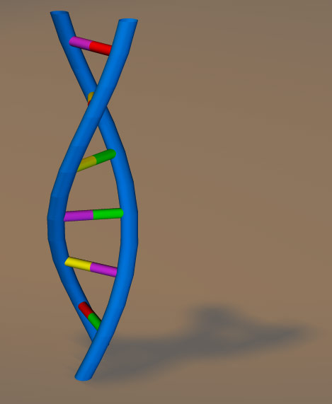
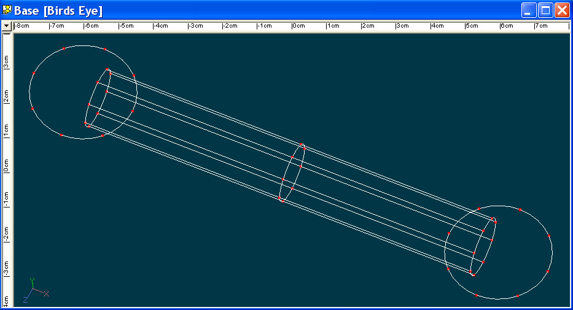
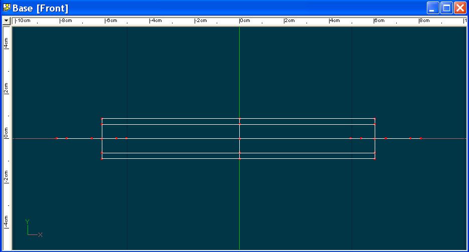
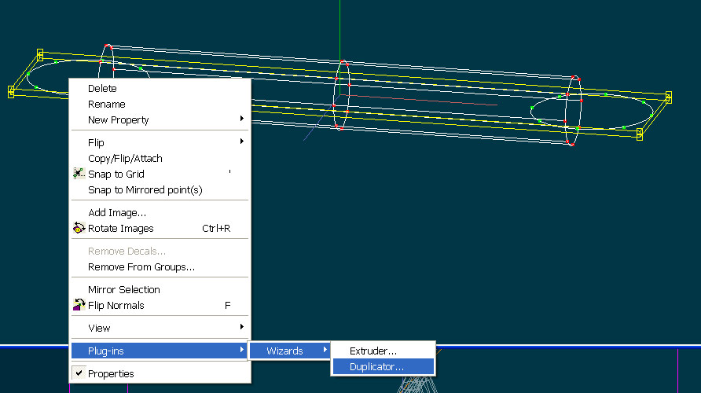
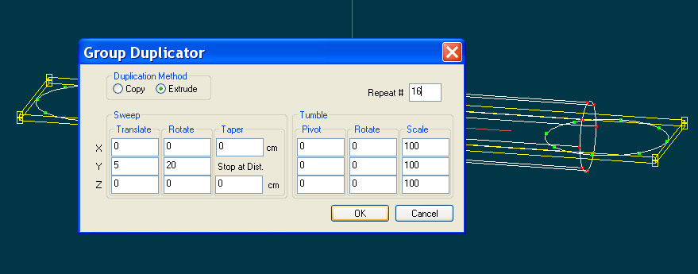
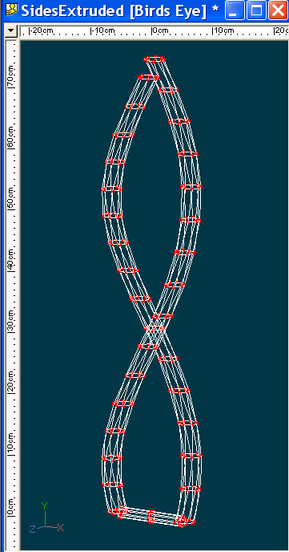
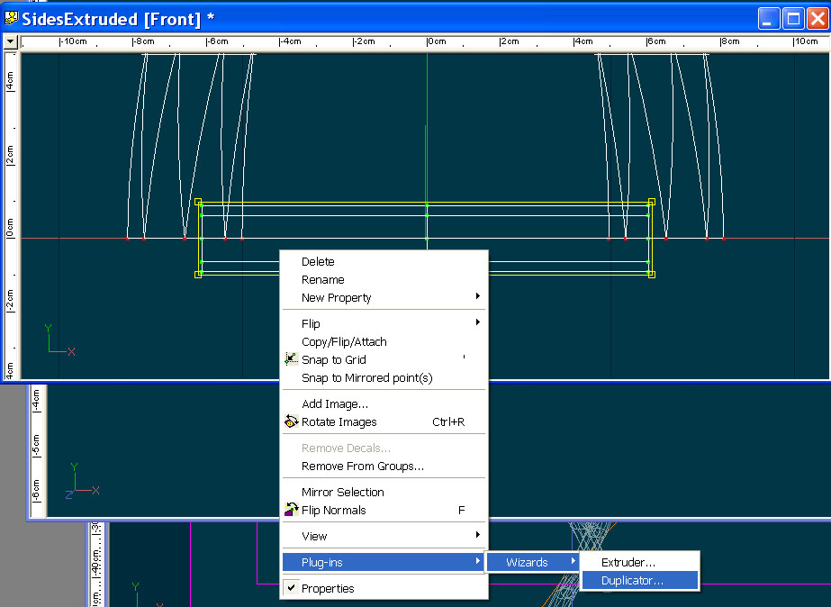
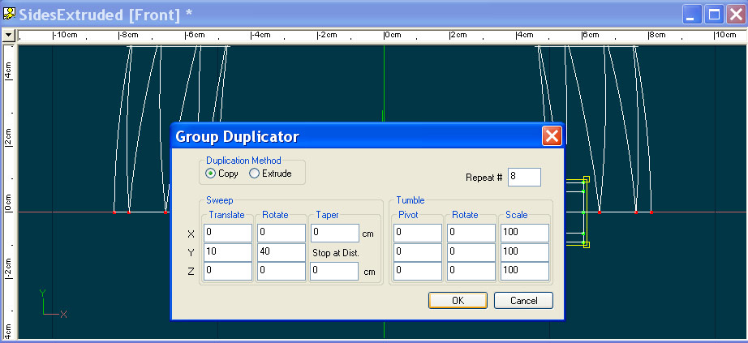
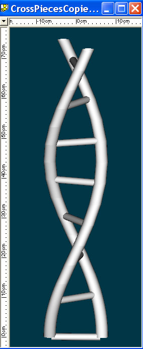

|  | ||||||||||||||
Tutorial: The Duplicator Wizard -or- 5 minute instant DNAMarch 10, 2002 |
||||||||||||||
One of the wizards that comes stock with Animation:Master v9.0 is the Duplicator Wizard. While it can do many things, we'll touch on a few of the basics to introduce you what it can do. In this exercise, we're going to use the Duplicator Wizard to create a simple DNA strand. DNA is a twisted helix. Imagine a ladder made of rubber. Now grab the top and bottom and twist in opposite directions. That's what DNA looks like (more or less) though it normally is coiled in on itself in a pretty compact structure. The title picture from this tutorial is what we're going to create in just a few simple steps. Step 1: The basic modelThe first thing we're going to create is a simple shape. Two circles spanned by a simple cylinder. Here are a couple images of the initial shape. Feel free to use the model from the included project file or create it from scratch. Bird's Eye ViewBird's Eye ViewStep 2: Extrude the SidesNow that we have the basics of our DNA strand laid out (2 minutes total, assuming you've completed Basic Splinesmanship), let's extrude the sides of our DNA strand. Select the two circles that will become the sides of our strand. This can be done simply by clicking to the upper left of the left most two Control Points (CPs) and dragging a selection box around those first two CPs. Now hold down SHIFT (to maintain the current selection) and do the same to the two right-most CPs. Now hit '/' which, if you haven't redefined your own keystrokes, will select the entire two circles but not the crosspiece. With the two circles selected and your mouse pointer over the selection box, hit the Right Mouse Button (RMB) and you should get a popup menu selection. Move the mouse down to Plug-ins->Wizards->Duplicator (you may just have that and Extrude, but other may be released at a later date). It should look like this: We should now get the Duplicator window. This is how we'll define what we want the Wizard to do for us. In a later section/tutorial, we'll look at what some of the other controls do, but for this one we'll keep it simple. You should see a window that looks like this: The first thing to note is the Duplication Method. We can either Copy or Extrude. We'll use both in this example, but right now we'll use the default Extrude. Extrude will create copies of the shape we've selected and will connect the selected CPs with those it extrudes, creating a single solid mesh. For this example we select Extrude. Next under the Sweep section, we will change the Sweep/Translate/Y value from it's default -5 to 5. The negative value would have us extrude down the Y-axis whereas we want to go up the Y-axis, so we'll use a positive 5. Under Sweep/Rotate/Y we'll enter a value of 20. This means as we extrude the shape, we'll rotate the shape by 20 degrees around the pivot for the model. In this case, if you built the base model as I did, the pivot is sitting at the origin (0,0,0) in each of the X/Y/Z directions. If that's not what you want, you can move the pivot, but it is what we want in this case. Finally, we will repeat this extrude 16 times in this case. Now hit OK and let's take a look at the result. If all is well, you should see something that looks like the image above. Our two circles have been replicated 16 times as we sweep around the Y-axis, giving us that double helix look we're after. Step 3: Copy the cross-pieceNow go back to our model, Front View and select the cross piece. Again with the mouse pointer over the selected cross-piece, hit the RMB and select Plug-ins->Wizards->Duplicator. You should see this: We should now get the Duplicator window. Now let's tell is what to do for this step. In this case we now want to make multiple copies of the cross-piece, not extrude it. Next under the Sweep section, we will change the Sweep/Translate/Y value from it's default -5 to 10. In this case, I want one rung for every two sections of extruded sides. That's just a personal choice that worked for me. Under Sweep/Rotate/Y we'll enter a value of 40. Since we will create half as many rungs as the number of times we extruded, we will need to sweep around twice as far to keep things lined up. Finally, we will repeat this copy 8 times (half of the 16 we did for the previous extrude). Now hit OK and let's take a look at the result. This was a simple Quick Render in the model window. The main reason for this is to be sure we've created what we think we wanted and that it renders as a solid. Stricly speaking, we've accomplished our goal, but let's take a moment and make it look a bit nicer. In this case I created 5 simple materials representing the sides (blue in my case) and 4 separate colors to represent the four nitrogen containing bases that make up nucleic acids or DNA (and because it looks good). Next I created groups for the sides, applied the side material. Then I created four groups made up of halves of the cross-pieces that I wanted to be particular colors (violating some of the rules of what bonds with what, but this is about modeling not biology). Almost done. Next I deleted the bottom cross section of side and the bottom cross-piece because that gave me a model that was balanced top to bottom (note how the cross-piece sort of hangs off the bottom in the Quick Render above). Finally, I put the model in the default choreography, which has a nice lighting scheme and rendered after moving the camera around a bit. This is what I got: ConclusionsThere! All done! We just created a model in five minutes of something that took millions of years to evolve. Not bad! Downloads
|
||||||||||||||
| |
||||||||||||||
|
This document maintained by
webmaster@mossor.org. |